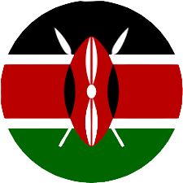
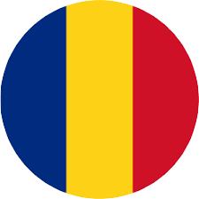

This was a collaborative game made during the 2020 Brackeys Game Jam.
This was a 2d Game where the main character had to rewind time to save his wife who is stuck in a washer.
The player also has to fight the enemies who in this scenrio are the washers. Thus, when killed by the enemies he can rewind time and prevent himself from being killed.
The Game was developed in one week time and we were able to be ranked at
The team consisted of 3 :
 Shem : UI & UX / Sound
 Balu : Programmer/Artist
 Adam : Programmer
Adam : Programmer
CLICK TO PLAY

Sanse is a Sheng Word Meaning Police.
This was my personal Project where the game was developed in 2 months
This was a 2d game replicating the Curfew which was implemented by the kenyan president
The main objective of the game is for the player to RUN AWAY from the police and prevent himself from being caught
CLICK TO PLAY